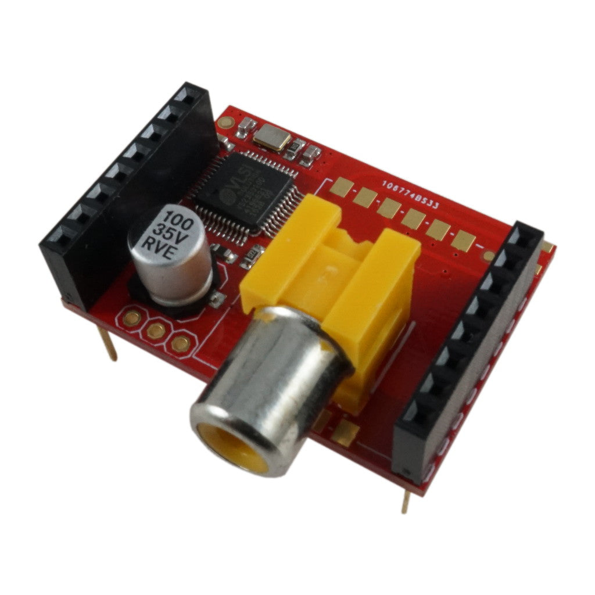
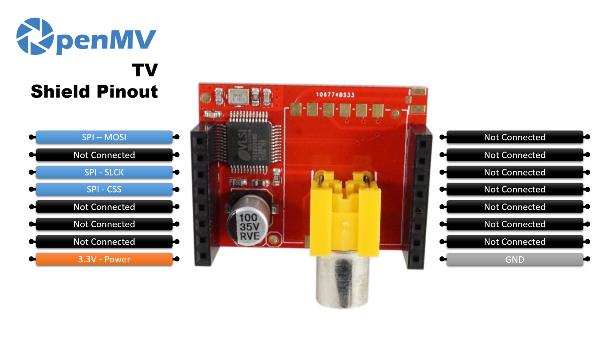

TV Shield¶
TV Shield มอบเอาต์พุตวิดีโออนาล็อก NTSC ให้กับ OpenMV Cam ผ่านชิป VS23S010 SPI-to-NTSC โดยขับ RCA jack บนบอร์ดเพื่อเสียบจอแสดงผลวิดีโอ composite เข้ากับกล้องโดยตรง
{kind=link}

ดูข้อมูล datasheet ฉบับเต็ม รูปภาพ และการสั่งซื้อได้ที่ หน้าผลิตภัณฑ์ TV Shield
จุดเด่น¶
ชิป VS23S010 SPI-to-NTSC
เอาต์พุต NTSC SIF 352x240 ที่ 60 Hz
RCA jack บนบอร์ดสำหรับวิดีโอ composite
ผังพิน¶
{kind=link}

อ้างอิงพิน¶
พิน |
ฟังก์ชัน |
|---|---|
P0 |
SPI MOSI — ข้อมูลไปยัง VS23S010 |
P2 |
สัญญาณนาฬิกา SPI |
P3 |
SPI chip select |
3.3V rail |
จ่ายไฟให้ VS23S010 |
GND rail |
กราวด์ร่วม (ต่อถึง RCA jack บนบอร์ดด้วย) |
Note
เอาต์พุตวิดีโอ NTSC, VIN และ GND ยังถูกนำออกมาที่แพดรูเจาะด้านล่าง shield — บัดกรีสายที่นั่นเพื่อนำสัญญาณวิดีโอ composite แบบมีสายออกจากบอร์ด
การใช้งาน¶
ขับ shield ผ่าน คลาส TVDisplay ที่เปิดเผยโดย โมดูล display ส่งเฟรมกล้องออก RCA jack ที่ SIF 352×240:
import csi
import display
import time
csi0 = csi.CSI()
csi0.reset()
csi0.pixformat(csi.RGB565)
csi0.framesize(csi.SIF)
tv = display.TVDisplay()
clock = time.clock()
while True:
clock.tick()
tv.write(csi0.snapshot())
print(clock.fps())